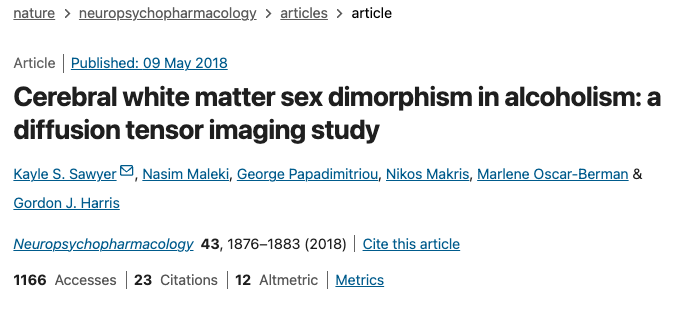
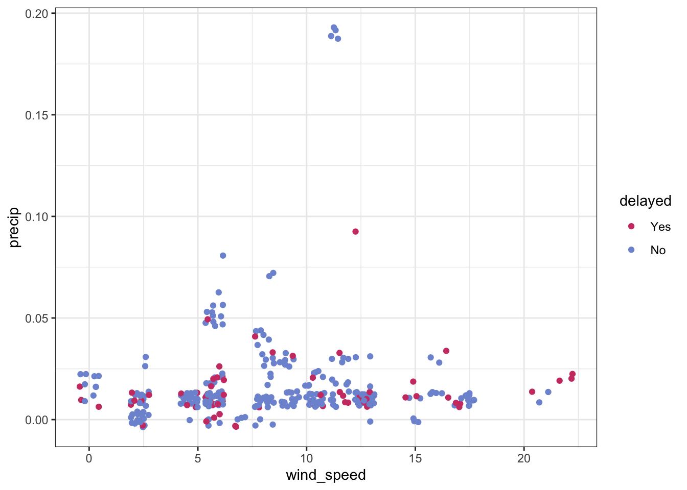

mtcars
#> mpg cyl disp hp drat wt qsec vs am gear
#> Mazda RX4 21.0 6 160.0 110 3.90 2.620 16.46 0 1 4
#> Mazda RX4 Wag 21.0 6 160.0 110 3.90 2.875 17.02 0 1 4
#> Datsun 710 22.8 4 108.0 93 3.85 2.320 18.61 1 1 4
#> Hornet 4 Drive 21.4 6 258.0 110 3.08 3.215 19.44 1 0 3
#> Hornet Sportabout 18.7 8 360.0 175 3.15 3.440 17.02 0 0 3
#> Valiant 18.1 6 225.0 105 2.76 3.460 20.22 1 0 3
#> Duster 360 14.3 8 360.0 245 3.21 3.570 15.84 0 0 3
#> Merc 240D 24.4 4 146.7 62 3.69 3.190 20.00 1 0 4
#> Merc 230 22.8 4 140.8 95 3.92 3.150 22.90 1 0 4
#> Merc 280 19.2 6 167.6 123 3.92 3.440 18.30 1 0 4
#> Merc 280C 17.8 6 167.6 123 3.92 3.440 18.90 1 0 4
#> Merc 450SE 16.4 8 275.8 180 3.07 4.070 17.40 0 0 3
#> Merc 450SL 17.3 8 275.8 180 3.07 3.730 17.60 0 0 3
#> Merc 450SLC 15.2 8 275.8 180 3.07 3.780 18.00 0 0 3
#> Cadillac Fleetwood 10.4 8 472.0 205 2.93 5.250 17.98 0 0 3
#> Lincoln Continental 10.4 8 460.0 215 3.00 5.424 17.82 0 0 3
#> Chrysler Imperial 14.7 8 440.0 230 3.23 5.345 17.42 0 0 3
#> Fiat 128 32.4 4 78.7 66 4.08 2.200 19.47 1 1 4
#> Honda Civic 30.4 4 75.7 52 4.93 1.615 18.52 1 1 4
#> Toyota Corolla 33.9 4 71.1 65 4.22 1.835 19.90 1 1 4
#> Toyota Corona 21.5 4 120.1 97 3.70 2.465 20.01 1 0 3
#> Dodge Challenger 15.5 8 318.0 150 2.76 3.520 16.87 0 0 3
#> AMC Javelin 15.2 8 304.0 150 3.15 3.435 17.30 0 0 3
#> Camaro Z28 13.3 8 350.0 245 3.73 3.840 15.41 0 0 3
#> Pontiac Firebird 19.2 8 400.0 175 3.08 3.845 17.05 0 0 3
#> Fiat X1-9 27.3 4 79.0 66 4.08 1.935 18.90 1 1 4
#> Porsche 914-2 26.0 4 120.3 91 4.43 2.140 16.70 0 1 5
#> Lotus Europa 30.4 4 95.1 113 3.77 1.513 16.90 1 1 5
#> Ford Pantera L 15.8 8 351.0 264 4.22 3.170 14.50 0 1 5
#> Ferrari Dino 19.7 6 145.0 175 3.62 2.770 15.50 0 1 5
#> Maserati Bora 15.0 8 301.0 335 3.54 3.570 14.60 0 1 5
#> Volvo 142E 21.4 4 121.0 109 4.11 2.780 18.60 1 1 4
#> carb
#> Mazda RX4 4
#> Mazda RX4 Wag 4
#> Datsun 710 1
#> Hornet 4 Drive 1
#> Hornet Sportabout 2
#> Valiant 1
#> Duster 360 4
#> Merc 240D 2
#> Merc 230 2
#> Merc 280 4
#> Merc 280C 4
#> Merc 450SE 3
#> Merc 450SL 3
#> Merc 450SLC 3
#> Cadillac Fleetwood 4
#> Lincoln Continental 4
#> Chrysler Imperial 4
#> Fiat 128 1
#> Honda Civic 2
#> Toyota Corolla 1
#> Toyota Corona 1
#> Dodge Challenger 2
#> AMC Javelin 2
#> Camaro Z28 4
#> Pontiac Firebird 2
#> Fiat X1-9 1
#> Porsche 914-2 2
#> Lotus Europa 2
#> Ford Pantera L 4
#> Ferrari Dino 6
#> Maserati Bora 8
#> Volvo 142E 2
üëã Who am I?


üëã Who are we?


üëã Who are you?



Roadmap
- What is tidymodels?
- Why tidymodels?
- Applied exampleüõ©
- Resources
What is tidymodels?
The tidymodels framework is a collection of packages for modeling and machine learning using tidyverse principles.
- tidymodels.org
…so what is modeling and machine learning?
BYO Venn Diagram
The tidymodels framework is a collection of packages for safe, performant, and expressive supervised predictive modeling on tabular data.
ü•¥
The tidymodels framework is a collection of packages for safe, performant, and expressive supervised predictive modeling on tabular data.
ü•¥
The tidymodels framework is a collection of packages for safe, performant, and expressive supervised predictive modeling on tabular data.
ü•¥
The tidymodels framework is a collection of packages for safe, performant, and expressive supervised predictive modeling on tabular data.
ü•¥
The tidymodels framework is a collection of packages for safe, performant, and expressive supervised predictive modeling on tabular data.
ü•¥
Think about the modeling problem, not the syntax.

Why tidymodels?
Why tidymodels?  Consistency
How many different ways can you think of to fit a linear model in R?
The blessing:
- Many statistical modeling practitioners implement methods in R
The curse:
- Many statistical modeling practitioners implement methods in R
Why tidymodels?  Consistency
Why tidymodels?  Consistency
Why tidymodels?  Consistency
Why tidymodels?  Consistency
Why tidymodels?  Consistency
Why tidymodels?  Safety1
Why tidymodels?  Safety1
- A 2023 review found data leakage to be “a widespread failure mode in machine-learning (ML)-based science.”
- Overfitting leads to analysts believing models are more performant than they actually are.
- Implementations of the same machine learning model give differing results, resulting in irreproducibility of modeling results.
Why tidymodels?  Safety
Why tidymodels?  Completeness

Why tidymodels?  Completeness
Built-in support for 99 machine learning models!
#> # A tibble: 99 × 2
#> name engine
#> <chr> <chr>
#> 1 boost_tree C5.0
#> 2 boost_tree h2o
#> 3 boost_tree h2o_gbm
#> 4 boost_tree lightgbm
#> 5 boost_tree mboost
#> 6 boost_tree spark
#> 7 boost_tree xgboost
#> 8 null_model parsnip
#> 9 svm_linear LiblineaR
#> 10 svm_linear kernlab
#> # ℹ 89 more rowsWhy tidymodels?  Completeness
Built-in support for 102 data pre-processing techniques!
#> # A tibble: 102 × 1
#> name
#> <chr>
#> 1 step_rename_at
#> 2 step_scale
#> 3 step_kpca
#> 4 step_percentile
#> 5 step_depth
#> 6 step_poly_bernstein
#> 7 step_impute_linear
#> 8 step_novel
#> 9 step_nnmf_sparse
#> 10 step_slice
#> # ℹ 92 more rowsWhy tidymodels?  Extensibility
Can’t find the technique you need?

Why tidymodels? Deployability
Tightly integrated with Posit Workbench and Connect
- Workbench: scalable, on-demand computational resources
- Connect: share work with collaborators and practitioners
Applied exampleüõ©
Who all is flying home for the holidays?
üò¨üéÖüò¨üéÖüò¨‚òÉÔ∏èüò¨üéÖüò¨‚òÉÔ∏èüò¨‚òÉÔ∏èüò¨
Flights out of Madison, WI
#> # A tibble: 10,754 × 14
#> delayed airline flight origin destination date hour plane
#> <fct> <chr> <fct> <fct> <fct> <date> <dbl> <fct>
#> 1 No Endeavor A… 51 MSN ATL 2022-01-01 5 N901…
#> 2 No PSA Airlin… 59 MSN CLT 2022-01-01 6 N570…
#> 3 No Envoy Air 27 MSN MIA 2022-01-01 6 N280…
#> 4 No American A… 3 MSN PHX 2022-01-01 6 N662…
#> 5 Yes American A… 16 MSN DFW 2022-01-01 7 N826…
#> 6 No SkyWest Ai… 26 MSN MSP 2022-01-01 7 N282…
#> # ℹ 10,748 more rows
#> # ℹ 6 more variables: distance <dbl>, duration <dbl>,
#> # wind_speed <dbl>, precip <dbl>, visibility <dbl>,
#> # plane_year <int>Note
See /example/query_data.R for the actual code to generate this data!
Flights out of Madison, WI
Around 17% of flights are delayed.
Flights out of Madison, WI
Flights out of Madison, WI
Flights out of Madison, WI
Round 1: evaluate unique combinations of
Preprocessors:
- formula (
delayed ~ .) - center and scale predictors
- PCA + center and scale predictors
…and models:
- logistic regression
- bagged MARS
- bagged decision tree
- neural network
- support vector machine
- LightGBM boosted tree
Flights out of Madison, WI
Flights out of Madison, WI
Round 2: investigate and refine whatever works!
Flights out of Madison, WI
Flights out of Madison, WI
See how we carried that analysis out here:

Resources
- tidyverse: r4ds.hadley.nz

Resources
- tidyverse: r4ds.hadley.nz
- tidymodels: tmwr.org

Resources
- tidyverse: r4ds.hadley.nz
- tidymodels: tmwr.org
- Posit Team: posit.co/team
Resources
- tidyverse: r4ds.hadley.nz
- tidymodels: tmwr.org
- Posit Team: posit.co/team
- Slides and example notebook:
Thank you!
github.com/simonpcouch/tidymodels-uw-2023